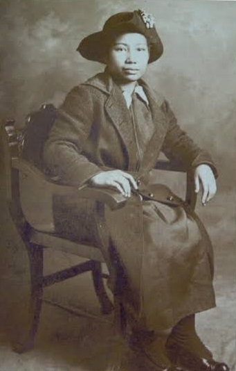

Maria Orosa
The woman invented banana ketchup

Maria Orosa is a Filipina war hero and the inventor of Soyalac and Banana Ketchup
Here's a timeline of Maria Orosa's life.
-
1892:
Born in Taal Batangas Philippines. -
1922:
Instead of being a chemist assistant in Washington Government, she return home and focus adressing malnutrition problem in the Philippines. -
1924:
She Organized 4-H youth organization teaching Filipino family to be self-suffient. -
1939-1945:
During World War II invented Soyalac and Banana ketchup to address food crysis. -
1945:
Died during a war boming raid
- Maria Orosa